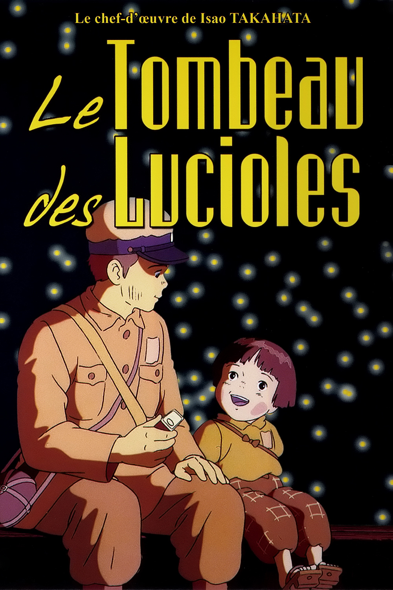
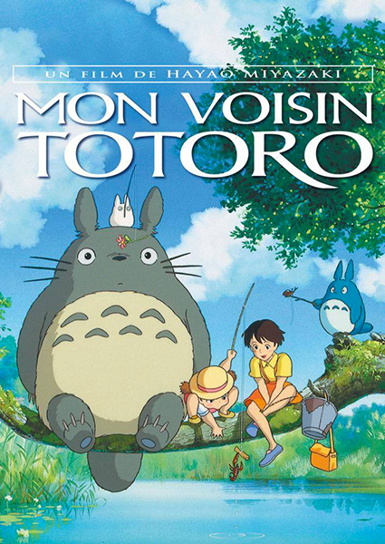

Le nom du studio provient du mot que les Italiens utilisaient pendant la pour désigner l'un de leur avion de reconnaissance, le Caproni Ca.3091 Ghibli. Hayao Miyazaki, fan d'aviation, décide de choisir ce nom. Pour lui le studio Ghibli se doit de jouer un rôle d'éclaireur dans le secteur de l'animation japonaise, et d'y faire souffler un vent de nouveauté. Le nom italien se prononce avec un « g » dur (ɡ), alors que le nom japonais se prononce avec un « g » mou (d͡ʒ) donnant la prononciation dʑíbɯɽiEcouter, les occidentaux ayant tendance à utiliser la prononciation issue de l'italien. La prononciation avec un « g » dur a cependant été utilisée par le studio au Japon pour les titres « anglicisés » des courts-métrages Ghiblies et Ghiblies Episode 2, prononcés « giburīzu » (ギブリーズ?). Tout le monde connaît le Studio Ghibli ,son logo bleu sur lequel s'esquise la silhouette de Totoro. En une vingtaine de films et trente ans d'existence le studio d'animation situé dans la petite ville de Koganei, a imposé sa patte. Un univers de conte peuplé de figures étranges, où l'imagination est tour à tout merveilleuse et terriblement inquiétante. Comment le studio est-il devenu une référence, qui, malgré ses moyens artisanaux, peut se mesurer à Disney et Pixar? C'est en que les deux réalisateurs Hayao Miyazaki et Isao Takahata, et le producteur Toshio Suzuki fondent le studio. C'est un avion italien, utilisé pendant la Seconde Guerre mondiale qui inspire le nom Ghibli. Miyazaki est alors fort du succès de son deuxième film Nausicää de la vallée du vent. Ghibli porte un soin tout particulier sur le scénario, sur les personnages - notamment les personnages féminins - et sur l'animation. On y produit surtout les films de Miyazaki, dont la plupart sont de grands succès au Japon et à l'étranger: Mon voisin Totoro (), Kiki la petite sorcière (), Princesse Mononoké (), Le Voyage de Chihiro ()... Le réalisateur introduit des thèmes habituellement mis de côté par le cinéma d'animation: la mort, le deuil, le passage à l'âge adulte... Sans oublier de dresser une galerie de personnages attachants. Isao Takahata, lui, travaille différemment. Attaché à représenter la nature, moins dessinateur que réalisateur, il pousse les limites de l'animation dès son premier film Le Tombeau des lucioles en 1988 et réalise même un documentaire (L'Histoire du canal de Yanagawa en 1987). Il obtient notamment le prix de la critique du festival d'Annecy pour Pompoko en 1994. Au milieu de ces deux géants de l'animation, difficile pour d'autres réalisateurs de se faire une place. , The Walt Disney Company a obtenu l'exclusivité des droits de distribution à l'étranger des films du studio Ghibli. À l'origine, sa filiale Buena Vista Distribution avait choisi de distribuer en France un film du studio Ghibli tous les six mois, et de ne les sortir en DVD qu'après leur exploitation en salle. Mais les plannings ont parfois changé et leur sortie au cinéma a pu être espacée de plus d'un an. De plus, Buena Vista France a décidé de sortir plusieurs films directement en DVD . Aux États-Unis, les films antérieurs à ont tous été diffusés directement en DVD . Certains sont actuellement introuvables en édition DVD française. , le porte-parole de la compagnie new-yorkaise GKIDS annonce avoir obtenu les droits de distribution nord-américains pour La Colline aux coquelicots, long-métrage sorti en au Japon. Une rumeur se diffusesur des sites anglophones et est reprise en France, annonçant l'arrêt de la production de long-métrages. Cependant, elle semble infondée et basée sur une erreur de traduction d'une interview de Toshio Suzuki, le producteur6. Suzuki évoque une « pause », une « reconstruction » et une « restructuration », ce qui pourrait signifier une réorganisation et un recentrage des activités du studio. Ghibli a tout de même, pendant ses trente ans d'existence, ouvert ses portes à d'autres talents. Le fils de Myiazaki, Goro, qui entretient des relations compliquées avec son père, s'est lui-même essayé, avec plus ou moins de succès, à l'animation avec Les Contes de Terremer et La Colline aux coquelicots. Le réalisateur de Totoro a, lui, placé ses espoirs dans le talent de Hiromasa Yonebayashi (Arrietty, Souvenirs de Marnie). Mais il semblerait que les nouveaux noms du studio ne suffisent plus à maintenir l'institution à flot. Depuis que les deux figures historiques ont annoncé leur retraite, on annonce la possible fin de Ghibli. Les chiffres, eux aussi, déçoivent. Les deux superbes films testamentaires de Miyazaki (Le vent se lève) et Takahata (Le Conte de la princesse Kaguya) n'ont pas eu le succès escompté. Les chiffres du très beau Souvenirs de Marnie ont, quant à eux, déçus au Japon. Il devient nécessaire que le film soit un succès en France pour redonner au producteur Toshio Suzuki une lueur d'espoir...
Pour plus d'information ,je vous conseille cette video sur youtube.
Dans ce site je vais vous présenter 3 films importants ,cliquer sur les images pour aller sur le film qui vous intérèsse:
et si vous voulez retourner au sommaire cliquer sur l'image
|  |  |

|
| Studio Ghibli | |
|---|---|
| Film pré Ghibli | Horus, prince du Soleil () · Panda Petit Panda () · Le Château de Cagliostro () · Kié la petite peste () · Goshu le violoncelliste () · Nausicaä de la Vallée du Vent () |
| Films Ghibli | Le Château dans le ciel () · Mon voisin Totoro () · Le Tombeau des lucioles () · Kiki la petite sorcière () · Souvenirs goutte à goutte () · Porco Rosso () · Je peux entendre l’océan () · Pompoko ()· Si tu tends l’oreille () · Princesse Mononoké () · Mes voisins les Yamada () · Le Voyage de Chihiro () · Le Royaume des chats () · Le Château ambulant () · Les Contes de Terremer () · Ponyo sur la falaise () · Arrietty, le petit monde des chapardeurs () · La Colline aux coquelicots () · Le vent se lève () · Le Conte de la princesse Kaguya () · Souvenirs de Marnie () |
| Courts-métrages | Courts-métrages Nandarou () · On Your Mark () · Ghiblies () · La Chasse à la baleine (() · Ghiblies Episode 2 () · Mei et le chaton-bus (() · À la recherche d'une maison () · Taneyamagahara no Yoru () · Le Jour où j'ai cultivé une étoile () · Monomon l'araignée d'eau () · Iblard Jikan () |
| Personnel | Fondateurs : Bon article Hayao Miyazaki · Isao Takahata – Principal producteur : Toshio Suzuki Principaux collaborateurs : Joe Hisaishi · Yoshinori Kanada · Katsuya Kondō · Yoshifumi Kondō · Kitarō Kōsaka · Gorō Miyazaki · Hiroyuki Morita · Kazuo Oga · Yasuo Ōtsuka · Hiromasa Yonebayashi |
| Autres | Musée Ghibli · Ghibli Museum Library · Article de qualité Nausicaä · Ni no Kuni · Totoro · Susuwatari |
Les jeux auxquels le studio ou l'un de ses membres a participé : : Jade Cocoon: Story of the Tamamayu (玉繭物語, Tamamayu Monogatari?) : PlayStation, character design de Katsuya Kondō : Ni no Kuni (ニノ国?) : Nintendo DS et PlayStation 3, animations et character design 2014 : Ronya, fille de brigand (山賊の娘ローニャ, Sanzoku no Musume Rōnya)